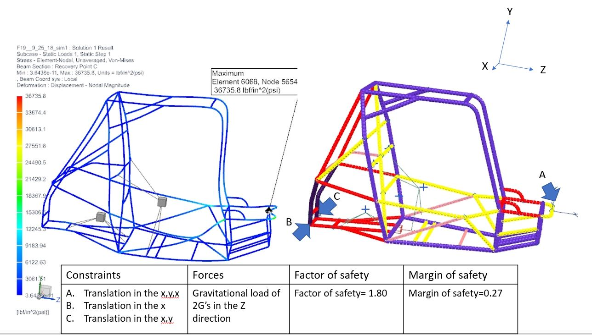
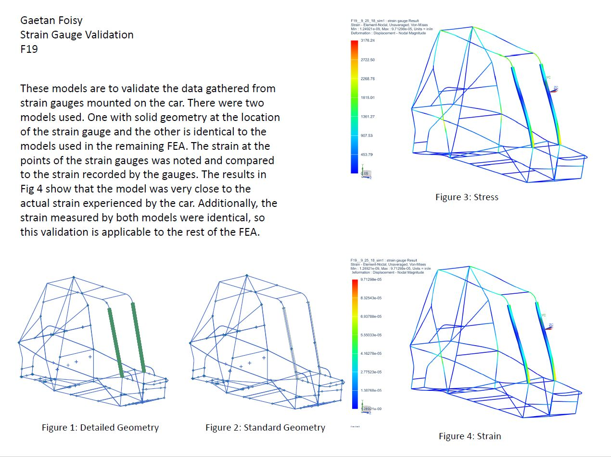
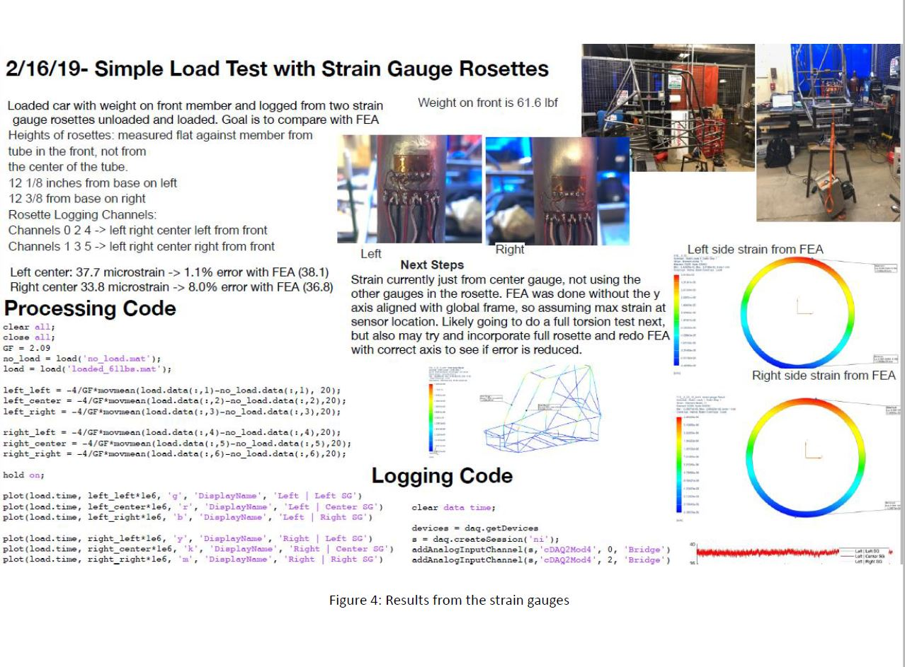

As frame team lead, I had a few goals in mind.
I wanted the frame to be light, strong, and more reliably manufactured. For more on the manufacturing, see this page.

Making the frame light and strong required accurate FEA. I used NX for the analysis because it handles both modeling and analysis well, which meant I didn't have to switch programs every time I updated the model. Instead of a solid model of the frame, I built a wireframe model (a collection of connected lines) and assigned each line the physical properties of the tube it represented. This beam-element approach dramatically reduced solve time: where a solid model would take hours, the wireframe model took seconds. Our Baja car was particularly well suited to this approach because its frame is made almost entirely of tubes, so the simplified beam model is nearly identical to the real thing. I would not recommend this method for parts that aren't made of beams, such as the car's uprights. Those had to be analyzed as solid models, and they melted the suspension lead's laptop.

While this approach makes sense in theory, trusting it for a part as critical as a roll cage is still a big leap, so I tested it. FEA on a detailed solid model gave results identical to the wireframe model. Unfortunately, comparing the FEA to the real car required building the car first.

Thanks to our improved manufacturing techniques and the quality of NX's solvers, the strain measured in testing was within 1% to 8% of our predictions and within our factor of safety.
After manufacturing, it was time to weigh the car. My model was lighter than the previous year's CAD model, but welding can add a lot of weight, so I was nervous. Fortunately, the finished frame was lighter too. At 73.7 lb, it is the lightest frame in UR Baja history. As much as my ego would like the record to stand, I can't wait to see how future teams beat it.

Special thanks to Ethan Fahnestock for setting up the strain gauges while I studied for my dynamics exam.